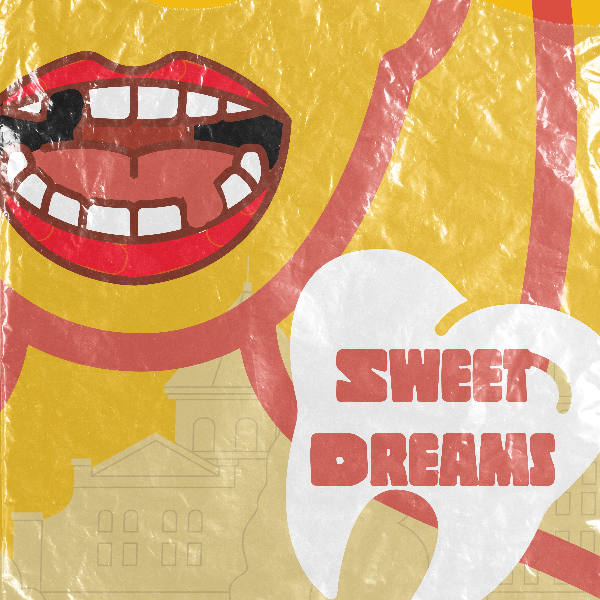
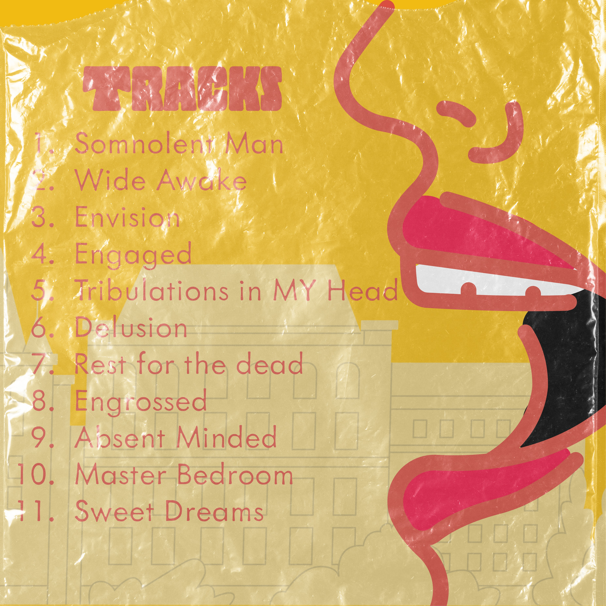

Works
Completed Works
| Project Name | Description | Media |
|---|---|---|
| Sweet Dreams | This project explores bold, graphic storytelling through a stylized poster design. Using vibrant colors, layered textures, and playful imagery like exaggerated lips and a tooth motif, I aimed to create a visually striking composition centered around the theme “Sweet Dreams.” The distressed overlay adds a tactile, vintage feel, while the abstract shapes and background architecture hint at a surreal, dreamlike environment. This piece reflects my interest in combining illustration and design to evoke mood and narrative through visual elements. |   |
| Autism animation | This project is an animation designed to build awareness and understanding of autism by illustrating how individuals on the spectrum may experience the world. Through visual storytelling, the animation highlights differences in sensory processing, communication, and social interaction in a clear and empathetic way. By using expressive visuals, sound design, and perspective shifts, the piece aims to help viewers better understand and connect with autistic experiences. The goal of the project is to promote empathy, reduce misconceptions, and encourage more inclusive thinking through an engaging and accessible medium. | TBD |
| Jump Duck | This project is a side-scrolling game where players navigate a continuously moving environment by jumping over and ducking under incoming enemies and obstacles. The gameplay focuses on timing, quick reflexes, and pattern recognition as the speed and difficulty gradually increase. Designed with simple controls and engaging visuals, the game creates an accessible yet challenging experience that keeps players reacting in real time. The project highlights core principles of game design, including player movement, collision detection, and progressive difficulty. | TBD |
Inprogress Works
| Project Name | Description | Media |
|---|---|---|
| Human Controler Game | This project involves developing a 2D interactive game where the player’s body acts as the controller. By using motion mapping techniques, the system tracks and translates real-time human movement into a virtual 2D environment, allowing players to control gameplay through physical gestures. The project explores the intersection of game design, human-computer interaction, and immersive technology, aiming to create a more intuitive and engaging player experience. | TBD |
| Interactive 3D Space Learning Environmen | This project is an interactive 3D environment designed to help students explore and understand concepts related to space. Users can navigate through a virtual universe, engaging with planets, stars, and other celestial elements in a hands-on way. By combining immersive visuals with interactive features, the experience makes complex space concepts more accessible and engaging. The project focuses on blending education with exploration, encouraging curiosity and active learning through a visually rich and intuitive digital environment. | TBD |
| Pluto's History | This project is a 3D animated piece that explores the history of Pluto, from its discovery to its reclassification as a dwarf planet. The animation visually presents key moments, including its discovery in 1930, its time as the ninth planet, and the scientific developments that led to its redefinition. Through engaging visuals and motion, the project aims to make complex astronomical concepts more accessible while telling a compelling story about how our understanding of the solar system continues to evolve. | TBD |